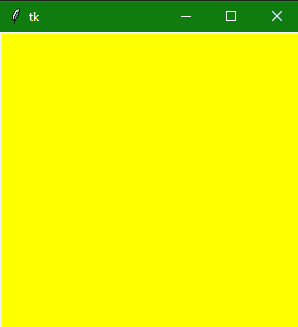
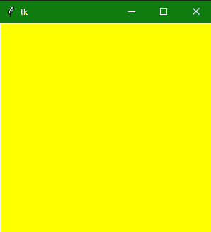
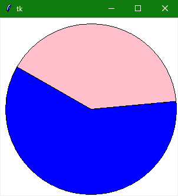

Tkinter 画布小部件
Tkinter Canvas widget 主要作为通用 widget，也就是用来在 Tkinter 中的应用窗口上绘制任何东西。
这个小部件主要用于绘制图形和图、图纸、图表和显示图像。
可以借助画布绘制多种复杂布局，如多边形、矩形、椭圆形、文字、弧形位图、图形等。
画布小部件也用于创建图形编辑器。
有许多选项可用于配置和控制画布小部件。
Tkinter Canvas Widget
画布小部件的语法如下所示:
w = Canvas(master, option=value)
在上面的语法中，master参数表示父窗口。您可以使用许多选项来更改画布的布局，这些选项被写成逗号分隔的键值。
Tkinter Canvas Widget 选项:
以下是画布小部件使用的各种选项:
| 选项名称 | 描述 |
| bd | 该选项主要用于设置边框的宽度，单位为像素。默认值 0px 表示无边框，1px 表示细线边框，可以增加边框宽度。 |
| bg | 该选项用于设置背景色。 |
| cursor | 光标是否使用画布上的箭头、圆点或圆圈，可以使用该选项。 |
| confine | 该选项设置为使画布在滚动区域外不可滚动。 |
| height | 该选项用于控制画布的高度。 |
| width | 该选项用于设置小部件的宽度。 |
| highlightcolor | 当有焦点在按钮上时，该选项指示高亮颜色 |
| xscrollcommand | 在这种情况下，如果画布是可滚动类型的，那么这个属性应该作为水平滚动条的set() 方法 |
| yscrollcommand | 在这种情况下，如果画布是可滚动类型的，那么这个属性应该作为垂直滚动条的set() 方法 |
| scrollregion | 这个选项主要用于表示指定为包含画布区域的元组的坐标 |
| xscrollincrement | 如果该选项的值设置为正值，则画布仅放置为该值的倍数。 |
| yscrollincrement | 主要用于垂直运动，其工作方式与xscrollincrement选项相同。 |
Tkinter 画布小部件基本示例
让我们借助画布小部件创建一个简单的画布:
from tkinter import *
# window named top
top = Tk()
# set height and width of window
top.geometry("300x300")
#creating a simple canvas with canvas widget
cv = Canvas(top, bg = "yellow", height = "300")
cv.pack()
top.mainloop()
 

上面的代码会创建一个简单画布，背景颜色黄色，你可以在上面画任何东西。
使用弧线的饼图
让我们在下面给出的代码片段的帮助下，创建一个画布，然后在其上绘制一个弧:
import tkinter
# init tk
root = tkinter.Tk()
# creating canvas
mCanvas = tkinter.Canvas(root, bg="white", height=300, width=300)
# drawing two arcs
coord = 10, 10, 300, 300
arc1 = mCanvas.create_arc(coord, start=0, extent=150, fill="pink")
arc2 = mCanvas.create_arc(coord, start=150, extent=215, fill="blue")
# adding canvas to window and display it
mCanvas.pack()
root.mainloop()

上面的代码会打开一个窗口，然后添加一个画布，然后在上面画两个弧线。由粉色和蓝色绘制的两条弧线共同组成一个圆，如上图所示。
总结:
在本教程中，我们了解了 Tkinter 画布小部件，它可以用来在画布上绘制任何东西，可能是图表、图像或一些动态形状。